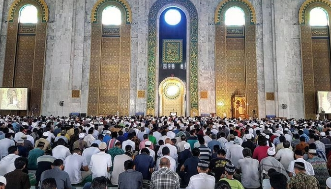

Hukum Meninggalkan Sholat Jumat tanpa Alasan

Bagi pria Muslim, Jumat merupakan hari istimewa karena adanya ibadah sholat Jumat yang menggantikan sholat zhuhur. Ritual ini wajib dilakukan oleh pria Muslim yang tidak memiliki alasan syar'i meninggalkannya.Tapi ternyata ada juga pria Muslim yang tidak melakukan sholat Jumat. Apakah hukuman bagi orang yang melalaikannya? Apa yang dijelaskan Allah SWT dan Rasul-Nya mengenai sholat Jumat?
Lembaga fatwa Mesir, Dar Ifta menyebut sholat Jumat adalah salah satu ritual terpenting dalam Islam yang tidak boleh dilewatkan kecuali dengan alasan yang sah. Allah SWT berfirman: Hai orang-orang beriman, apabila diseru untuk menunaikan sholat Jumat, maka bersegeralah kamu kepada mengingat Allah dan tinggalkanlah jual beli. Yang demikian itu lebih baik bagimu jika kamu mengetahui." (QS. Al Jumuah:9).Rasulullah SAW menjelaskan, hanya orang sakit, musafir, wanita, anak-anak dan budak yang tidak diwajibkan untuk sholat Jumat. Nabi bersabda: "Barangsiapa beriman kepada Allah dan hari akhir, wajib baginya shalat Jumat pada hari Jumat, kecuali orang yang sakit, musafir, kaum wanita, anak-anak dan budak." (HR. Daruquthni).
Lantas apa hukum orang yang meninggalkan sholat Jumat? Dilansir dari Elbalad, meninggalkan sholat Jumat adalah dosa besar jika tanpa alasan syar'i yang mencegah seseorang untuk melakukannya. Dijelaskan dalam hadist, orang yang sengaja meninggalkan sholat Jumat, Allah SWT akan tutup hatinya dari cahaya hidayah. Nabi bersabda: "Siapa yang meninggalkan sholat Jumat sebanyak tiga kali dengan meremehkannya, maka Allah tutup hatinya." (HR. Al-Albany) Ancaman Allah SWT bagi orang yang sengaja melalaikan sholat Jumat, setelah ditutup hatinya, Allah akan benar-benar buat orang itu menjadi lalai.
Nabi bersabda: "Hendaknya suatu kaum menghentikan perbuatannya meninggalkan sholat Jumat atau Allah SWT akan mengunci hati mereka lalu menjadikan mereka benar-benar menjadi orang yang lalai" (HR. Nasa'i dan Ibnu Majah).